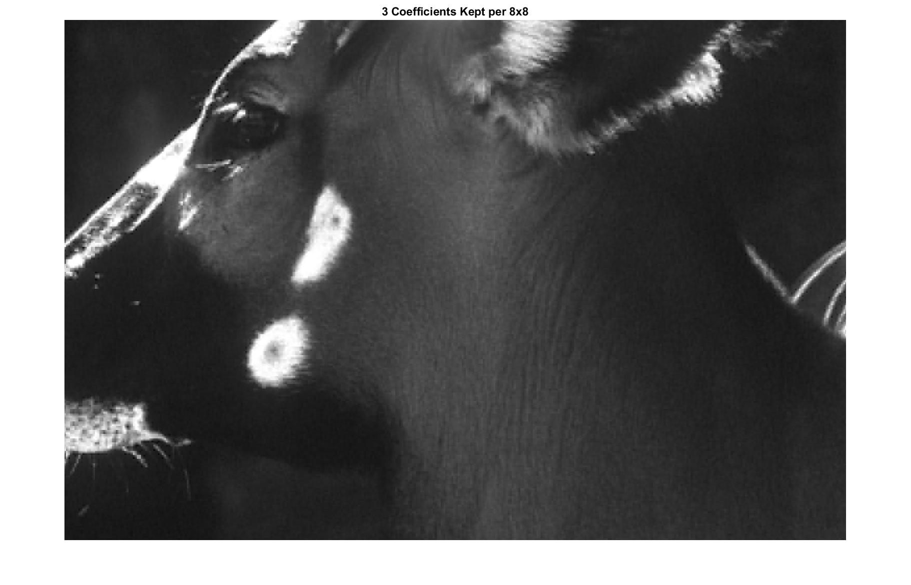

Discrete cosine transform (DCT)
Block-wise frequency decorrelation before quantization, the same building block as baseline JPEG.
Goal
After optional color transforms (see svd / pca), we reshape the image into non-overlapping 8×8 blocks per channel. A type-II DCT with orthonormal normalization is applied in 2D on each block so energy concentrates in a few low-frequency coefficients. That concentration is what makes aggressive quantization and run-length coding worthwhile.
Add <img src="assets/…" alt="…"> here (example: 8×8 basis tiles or pipeline snippet).
Math
Each 8×8 block is mapped from the spatial basis into a cosine basis so that most natural-image energy lands in the lowest-frequency coefficients. With orthonormal normalization (\(norm='ortho'\)), forward and inverse transforms are numerically consistent.
Code
In codec/pipelines/hybrid_hf_compression.py we apply SciPy’s dctn across the spatial axes of each block (axes=(3, 4)).
The decoder uses the matching idctn with the same normalization.
The DCT operates on the blocked tensor produced by codec/tools.py (block_image), and it produces a tensor of frequency coefficients that is immediately fed into
quantization.
Note: zig-zag reordering and DC/AC stream separation are part of our serialization step and are implemented in codec/encoders/run_length.py (see entropy encoders and dpcm).

Spatial domain
Baseline before DCT.

8×8 DCT blocks
Frequency-domain view per block.

Severe truncation
Keeping only one coefficient illustrates how much energy lives in the DC and lowest AC terms.

Three coefficients
Stepping up retention slightly restores more edge structure for a modest bit cost.
Hand-off
Output is a per-block frequency tensor. Next we apply quantization, then serialize blocks using zig-zag order, split DC and AC streams, run DPCM on the DC stream, and finally entropy encode both streams (see entropy encoders).